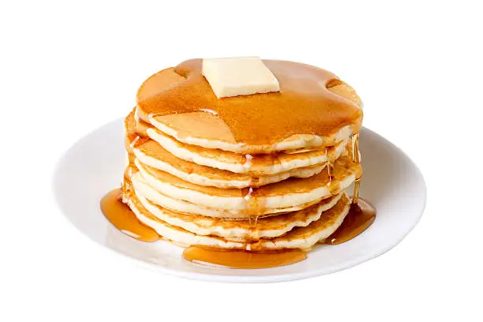

Freshly made pancakes topped with syrup and fruits
Ingredients
- 1 cup all-purpose flour
- 2 tablespoons sugar
- 2 teaspoons baking powder
- Pinch of salt
- 1 cup milk
- 1 large egg
- 2 tablespoons melted butter
- Butter or oil for cooking
Instructions
- In a bowl, mix flour, sugar, baking powder, and salt.
- In another bowl, whisk milk, egg, and melted butter.
- Pour wet ingredients into dry ingredients and stir until combined.
- Heat a non-stick pan over medium heat and grease lightly.
- Pour ¼ cup batter, cook until bubbles form, then flip.
- Serve warm with syrup, fruits, or toppings of your choice.